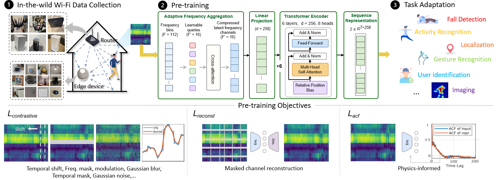

Under review at NeurIPS 2026
Code release will be updated when available.
Smart spaces need to sense people—whether someone is present, what they are doing, and basic body signals—without cameras. WiFi is everywhere, keeps visual privacy, and runs on billions of devices. Still, most WiFi sensing uses one-off models built for a single job; they need lots of labels and do not reuse what was learned before.
We present AmbientFM, a single large WiFi model trained first on unlabeled data, then tuned for many sensing jobs. It learns from 9.2 million channel state information (CSI) samples gathered over 439 days on 20 kinds of everyday devices around the world. Training mixes three signal-aware goals: contrastive learning (tell similar windows apart), masked reconstruction (fill in missing parts), and a physics-style autocorrelation task. On nine public test sets, one backbone reaches strong scores and needs fewer labels than training from scratch—showing WiFi sensing can share one base model like language or vision do.
WiFi CSI records how radio waves bounce around a room: people moving or breathing change the channel without cameras or wearables. Regular routers and IoT gear already stream CSI, but past work mostly trains a new model for each task, so nothing carries over and you label data again for every app.
AmbientFM learns CSI features that work for many tasks from messy real-home data. The network mixes adaptive frequency pooling (learn which subcarriers matter on mixed hardware), a transformer with relative time offsets, and three training losses that match real WiFi quirks: many reflected paths, dropped packets, and repeating motion patterns.
For each task you either freeze the encoder and train a small LSTM + classifier head, or keep the encoder frozen and add thin bottleneck adapters (~393K weights, under 8% of the encoder) in every transformer block. Both use the same time-based classifier so numbers stay comparable.
Compared with the same network trained from random weights, pre-training helps most when the job must work across different rooms and homes (activity, where you are, occupancy, distance). Jobs with very strong fingerprints, like telling users apart, already score well with little data even without pre-training.
Always-on CSI logging → WiFi-aware self-training on unlabeled windows → small task-specific heads or adapters for each sensing job.

Figure (concept). Left: CSI from many home IoT links. Center: train without labels using contrast, fill-in reconstruction, and autocorrelation (ACF). Right: tiny adapters or a frozen encoder + LSTM for fall alerts, maps, gestures, imaging, and more.
Pre-training uses no human labels. Three losses run together on CSI windows:
Data is logged 24/7 in real homes with 6–9 live links per site so we catch everyday motion, furniture blocking paths, and neighbor WiFi—not only scripted lab walks.
Coverage
Quality control
Public sets: CSI-Bench (many real-home tasks), SignFi (276 sign-language gestures), WiFiCam (WiFi + camera imaging).
Health
Fall detection — sudden falls vs normal motion.
Activity
Human activity recognition (HAR) · Motion source recognition (MSR) (human vs pet vs robot vs fan).
Space & distance
Occupancy · Localization · Proximity (distance buckets).
Identity
User identification (UID) — tell people apart from how they move.
Small motions
Gesture recognition — 276 SignFi classes.
Images from WiFi
WiFi imaging — dense image-like output; we report SSIM / PSNR, not AUROC.
Classification rows use AUROC (confidence intervals in the paper). Imaging uses SSIM / PSNR. We show AmbientFM + bottleneck adapters (BA) vs the same net trained from scratch.
| Method | Fall | HAR | Gesture | UID | Loc. | MSR | Occ. | Prox. | Imaging |
|---|---|---|---|---|---|---|---|---|---|
| AmbientFM + BA | 0.919 | 0.923 | 0.999 | 0.993 | 0.995 | 0.974 | 0.989 | 0.936 | 0.726 / 18.87 |
| AmbientFM + TP | 0.873 | 0.915 | 0.634 | 0.996 | 0.990 | 0.992 | 0.989 | 0.928 | 0.722 / 18.43 |
| Scratch | 0.916 | 0.527 | 0.564 | 0.995 | 0.631 | 0.593 | 0.566 | 0.494 | 0.726 / 18.41 |
With BA, AmbientFM beats 0.90 AUROC on all eight classification rows in Table 1. Frozen encoder + LSTM shines when classes are already far apart in feature space (UID, MSR, localization). With only a few labels per class (Fig. 2), pre-training lifts localization and proximity where scratch models stay near guessing. Fig. 3 turns pieces off one by one: both WiFi-only augmentations and the full three-loss mix matter—removing fill-in or ACF cuts fall and HAR the most.
The Base encoder (~5.57M weights, ~21.3 MB) runs about 4.25 µs per CSI window and over 233k windows/s on a normal laptop CPU (AMD Ryzen 7 PRO 7840U) with no GPU—enough for live use after a short task-specific tune.
Limits: each task still needs a short fine-tune; gains differ by task. Very heavy packet loss (around half of packets missing for long stretches) or SNR below ~15 dB hurts accuracy. The model only sees what WiFi CSI carries—not fine camera-level detail.